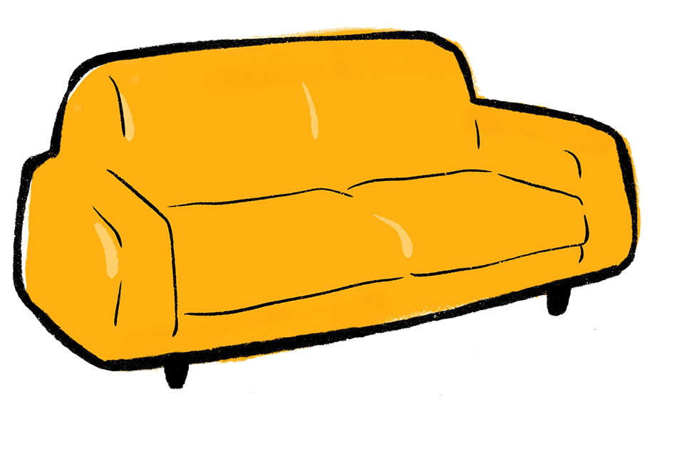
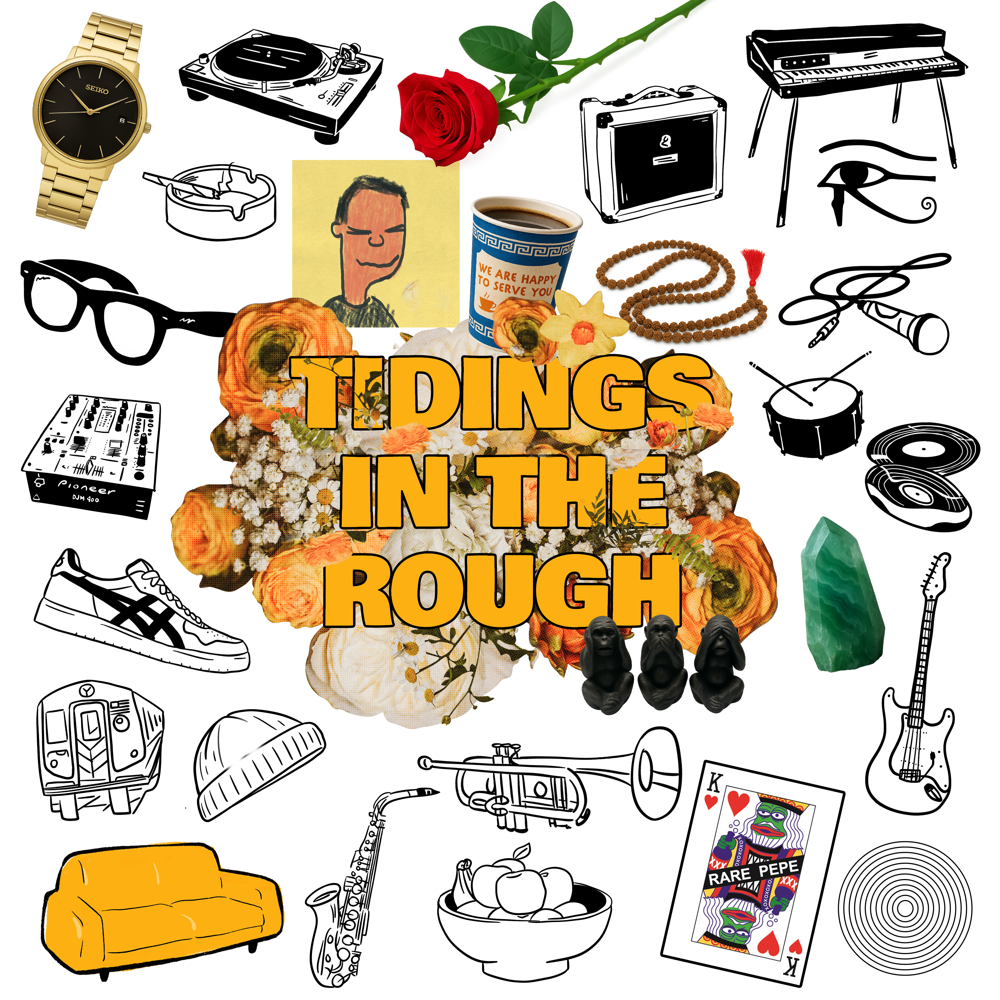

AJILE↗
LOUD / LIVE / IN THE ROOMAJILE
A power trio with Aayushi Karnik, Jaysin Glover, and Layton Weedeman. Big feel, live energy, and plenty of room to move.
Visit AJILE ↗
Listen / shopA living space for music and the people who make it. Records, rehearsals, stage moments and stories from a collaborative world built on groove.
Follow the groove.
One album. Many voices. Endless directions.
Our own little corner of the internet. Stage photos, first listens, unfinished thoughts, and stories worth keeping.
On the turntable Still spinning: our ten-track introduction to the Yellow Couch world.
Hear Tidings ↗The best moments don't always fit into 60 seconds. A home for footage, performances, and sessions.
These are story pages for now. Original footage and YouTube embeds can replace the graphic previews during the next content pass.
Catch us when we're out making some noise.
YCM is part of a bigger creative world. Here are a few things we're involved in.
A power trio with Aayushi Karnik, Jaysin Glover, and Layton Weedeman. Big feel, live energy, and plenty of room to move.
Visit AJILE ↗An evolving live music series bringing artists and audiences together, with the next episode planned for December 5 at Sleepwalk.
Events & curationConversations with the people who make the music possible, including a forthcoming episode featuring Bradley Valentin.
More to comeFounded by Brooklyn-based drummer, composer, and producer Layton Weedeman, Yellow Couch Music is a collaborative home for music that doesn't sit neatly in one lane.
Rooted in jazz, hip-hop, R&B, rock, and rhythms from everywhere, each project is shaped by the artists who show up and what happens when everyone starts listening to one another.
Hear the record, support the artists, and explore what’s available from Yellow Couch Music.
Music + shop ↗For presenters, collaborators, and anyone looking for the story behind the music.
Yellow Couch Music is a Brooklyn-based collaborative ensemble led by drummer and producer Layton Weedeman, connecting jazz-rooted improvisation with hip-hop, soul, rock, and global grooves.
Downloadable EPK and press assets can be added here.